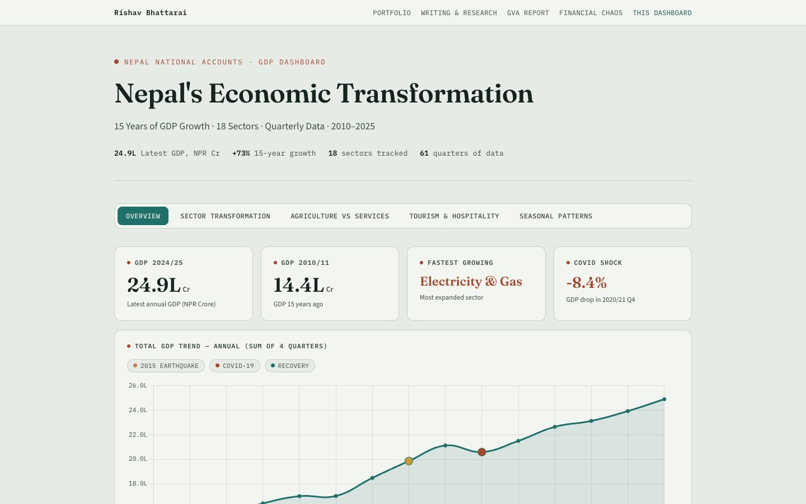
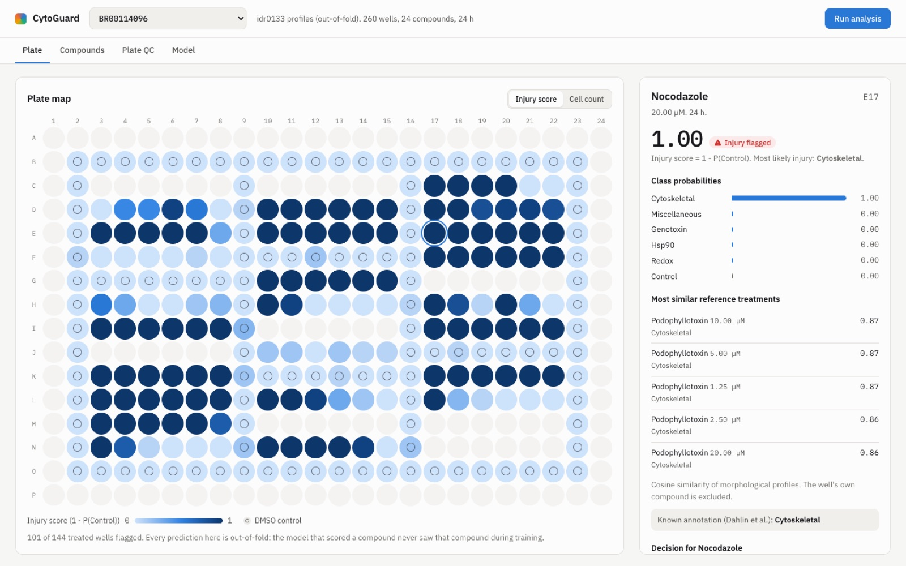
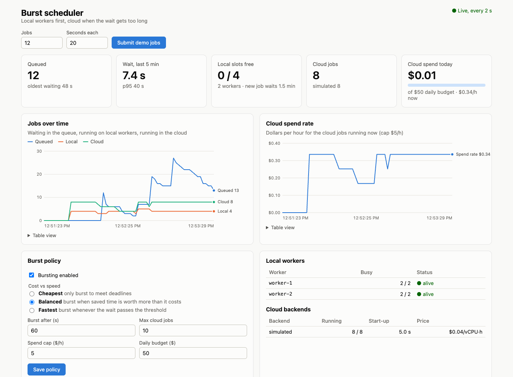
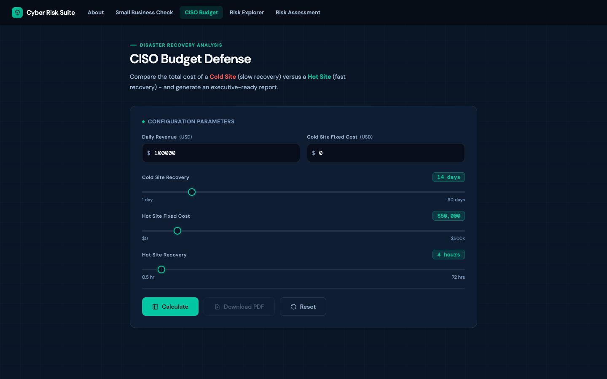
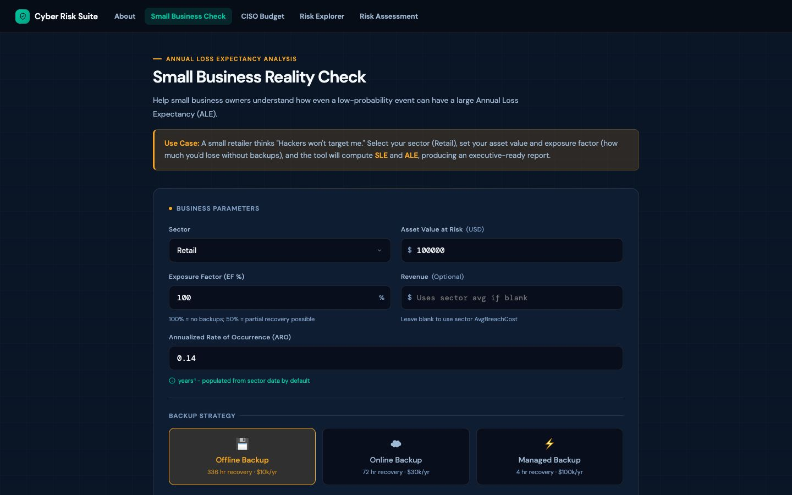
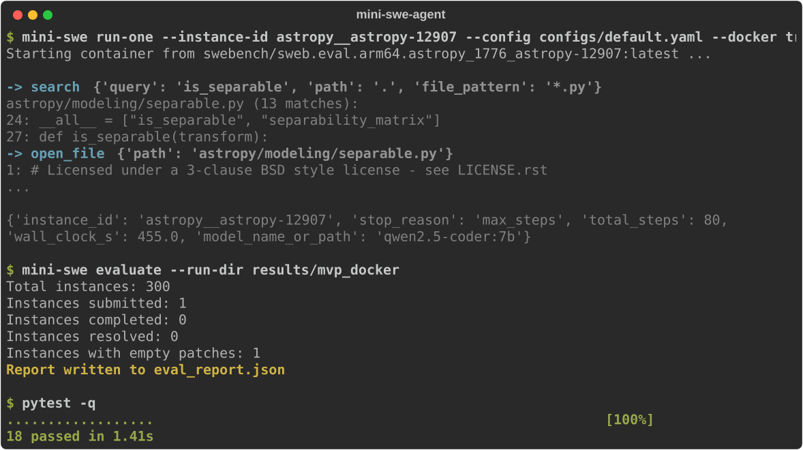
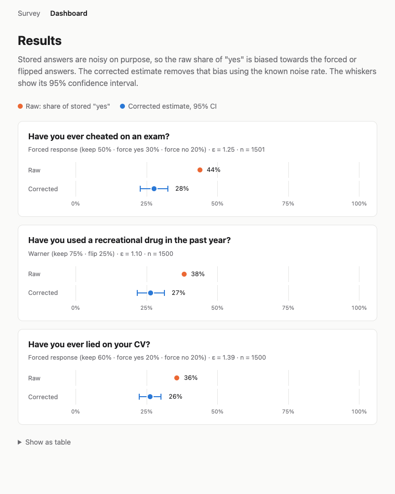

Usage Metering & Billing Pipeline
A pipeline that turns raw usage events, such as API calls or gigabytes stored, into monthly invoices and syncs customers and invoices to Salesforce. Raw events are never edited, so every invoice amount can be recomputed from the events that produced it.
- Ingests 1,000,000 events with 10% duplicates at 38,568 events/s and stores exactly the 900,129 unique ones, via
INSERT ... ON CONFLICT DO NOTHING on a client-supplied event ID
- Replays the full log of 999,589 events twice into an empty database and rebuilds all 200 invoices with identical SHA-256 hashes
- Pure rating engine (flat, graduated tiers, minimum commit) in
Decimal and integer cents, with Hypothesis property tests; late events become next-invoice adjustments priced at the old period's marginal rate
- Close, Salesforce sync and reconciliation run as jobs on jobq with retries and a DLQ. A live Developer Edition org matched the ledger to the cent: $598,167.89, zero drift
Python, FastAPI, PostgreSQL, jobq, Salesforce Bulk API 2.0, HTMX, Hypothesis, Docker
jobq: Distributed Job Queue
A job queue where a job is never lost and never runs twice by mistake, even when a worker crashes mid-task. Redis dispatches job IDs, PostgreSQL holds the record of every job and attempt, and idempotency keys make the effect happen once.
- Chaos test: 13 workers killed with
kill -9 during a 10,000-job run; 10,000 succeeded, 0 lost, 0 run twice
- Atomic Lua leasing, heartbeats, a reaper and attempt-number fencing so a stale worker can't overwrite a newer result
- Exponential backoff with full jitter, a replayable dead-letter queue, cron schedules and
429 backpressure
- Prometheus and Grafana dashboards, k6 load tests, and 63 tests against real Postgres and Redis
Python, FastAPI, Redis, PostgreSQL, Prometheus, Grafana, k6
Tanks Arena: Real-Time Multiplayer Netcode
A browser tank arena built to study multiplayer networking. The server simulates at a fixed 30 ticks per second and is the only source of truth; clients predict their own tank, interpolate everyone else, and hits are lag-compensated. No game engine, so all the netcode is hand-written and tested.
- Holds 1,680 players on one Node process within the 33 ms tick budget (p99 26.4 ms)
- Delta snapshots cut downstream bandwidth per player by 73%, from 24.30 to 6.64 KB/s
- 0 prediction corrections at 150 ms RTT and 5% packet loss; a cheating client's teleports, input floods and replays are all rejected
- Reconnect within 30 s keeps the same tank, position and score; 96 tests
TypeScript, Node.js, WebSockets, Canvas, Vitest, Prometheus, Grafana
Economic Indicators Dashboard
Fifteen years of Nepal GDP growth and sector-level GVA data, with charts you can filter by sector and year.
- 15-year GDP trends with year-over-year comparisons
- Sector-wise GVA breakdown with interactive filtering
JavaScript, Chart.js, D3.js, HTML5, CSS3

CytoGuard: Cellular Injury Detection in Cell Painting Screens
An open platform that flags injured wells in Cell Painting drug screens, names the likely injury mechanism, and shows the cells behind every call. Evaluated on 16,701 wells from IDR idr0133, with every compound scored by a model that never saw it.
- Macro-F1 of 0.462 on never-seen compounds, against 0.146 for the published Pycytominer baseline; AUROC 0.947 for injured vs healthy wells
- Raw images to injury calls with OME-Zarr, Cellpose-SAM and cp_measure; pixel-level scores match the published profiles at r = 0.95
- FastAPI job queue, plugin system and a web viewer with segmentation overlays; 20 tests and a one-command Snakemake workflow
Python, Cellpose-SAM, cp_measure, Pycytominer, LightGBM, FastAPI

PCVI Atlas: Heatwave Vulnerability Research
Public-health research pipeline testing whether U.S. communities with high prescriptions of heat-sensitizing medications face greater vulnerability during heatwaves, linking 8.79M Medicare Part D claims to summer heat exposure across Hospital Referral Regions.
- Four-stage pipeline: drug crosswalk (276 medications resolved to RxCUI/ATC), claims processing, evidence weighting, and causal analysis
- 6-year daily panel with conditional Poisson regression and 200-permutation placebo testing to separate correlation from causation
- Identified and corrected a prescriber-vs-patient-location denominator artifact by reattributing claims via hospital catchment areas
- Interactive Streamlit app for exploring results across NASA POWER, NOAA, and Census data sources
Python, Streamlit, Pandas, RxNorm/RxClass API, Dartmouth Atlas HRR
AMR-Climate Atlas: Antimicrobial Resistance Research
Causal panel testing whether a hotter year makes antibiotic resistance worse across 29 EU/EEA countries. Four government data sources are joined into a 2000-2023 panel, with a mandatory 200-permutation placebo test gating every result.
- Two-way fixed-effects regression across four pathogen-antibiotic combinations, cross-checked against independent genomic resistance data via BigQuery
- Live MCP server (Anthropic's official SDK) exposing live weather and genomic-resistance data, plus an eval-gated CI pipeline that refits every model on push
- Caught and documented a confounder column silently absorbed into the model's fixed effects, a bug with no error message
- Reported an honest mostly-null result: three of four combinations show nothing, the fourth a narrow, independently-corroborated exception
Python, Streamlit, MCP SDK, BigQuery, Fixed-Effects Panel Regression
burst-scheduler: Local-to-Cloud Burst Job Queue
A small job queue that runs jobs on local machines and, when a job would wait too long, sends it to cloud workers on Kubernetes or AWS Batch. Modeled on Princeton's Orchestrated Burst Compute and the HydroGEN stack.
- Policy engine weighs time saved against cloud cost, with deadlines, priorities, a spend-rate cap and a daily budget, and records its reason on every job
- JetStream dispatch with message de-duplication and redelivery, so a controller restart or worker crash loses no jobs
- React + TypeScript dashboard with live wait times, spend rate, backend usage and runtime policy controls
Python, FastAPI, NATS, Kubernetes, AWS Batch, React, Docker

Digital Wallet Platform (PayMe & AwiPay)
Digital wallet used by 100K+ people in Nepal. I built the transaction APIs, the service layer behind them, and the spending controls.
- REST APIs for transaction processing
- Service layer encapsulating business logic & data access
- Encryption and access checks on financial data
- Transaction controls and configurable spending limits
Java, Spring Boot, Hibernate, MySQL, Maven
ML: House Price Prediction System
An ML system that predicts house prices from user preferences and market data, with a full pipeline from preprocessing to a Flask front end.
- Data cleaning and preprocessing pipeline
- Feature engineering on location, size and market data
- Interactive web interface for preference input
- Each prediction shows the features that drove it
Python, scikit-learn, pandas, NumPy, Flask

CISO Budget Defense Calculator & Conference Paper
A published conference paper and a calculator that compares cold-site and hot-site disaster recovery in dollars, so a CISO can defend the budget.
- Cost comparison that updates as you change RTO and RPO
- Generates a report with charts and ROI for leadership
- Turns downtime and data-loss estimates into expected dollar losses
HTML5, CSS3, JavaScript, Chart.js, Bootstrap

Small Business Reality Check: ALE Tool
Shows a small business owner how much a cyber incident is likely to cost per year (Annual Loss Expectancy) and which controls pay for themselves.
- Interactive ALE calculator with customizable threat scenarios
- Visual risk matrices: probability vs. impact
- Cost-benefit analysis for security controls & insurance
HTML5, CSS3, JavaScript, D3.js, Bootstrap
Warranty Claims Management App
A warranty-claims app on the Salesforce Platform that covers the whole process, from the customer filing a claim to the technician closing it.
- Trigger framework, Batch/Queueable/Schedulable Apex, and a custom Error Log for exception tracking
- Multi-step LWC claim wizard, technician dashboard, and Lightning Message Service for cross-component comms
- Screen Flows, dollar-threshold Approval Processes, Platform Events, and Named Credentials/External Services integration
- Agentforce conversational agent that checks claim status and creates/updates claims via invocable Apex
- SFDX project structure with GitHub Actions CI running Apex tests & coverage checks on every push
Apex, LWC, Flow Builder, Agentforce, Platform Events, GitHub Actions
Harvest Market Platform
Salesforce marketplace for the UNLV Management & Entrepreneurship Department, where producers list goods and buyers check out, with live inventory and producer sales hierarchies.
- Custom data model for a multi-persona Producer/Consumer platform
- Screen Flows for product listing and checkout
- Automated Order creation and Inventory Management
Screen Flow, Custom Objects, Sales Hierarchies
CI/CD Release Pipeline Automation
CI/CD pipelines for the Education Cloud and Sales Cloud orgs, so Apex and LWC changes ship without manual deploys.
- Deployment time reduced by 87%
- ~150 engineering hours saved monthly
- Salesforce DX with automatic org validation before each deploy
CI/CD, Copado, GitHub Actions, Jenkins, Salesforce DX
Sales & Service Cloud Solutions @ UNLV OIT
Sales and Service Cloud builds in Flow, Apex and LWC for UNLV departments and student services.
- Flow automation for departmental & student service workflows
- Apex triggers/classes and LWC for operational tooling
- Roles, profiles, permission sets, public groups & sharing rules administration
- Bulk data operations via Data Loader for secure, compliant access
Apex, LWC, Flow Builder, Data Loader
Qualtrics Form Automation at Scale
Manages hundreds of Qualtrics forms with Flow and Custom Metadata, so departments reuse the same student application process every year without rebuilding it.
- Custom Metadata-driven Flow automation
- Profile-based access control across hundreds of forms
- Reusable annual application process, no redevelopment needed
Flow Builder, Custom Metadata Types, Qualtrics Integration
Org-to-Org Data Seeding & Migration Tool
A Bulk API tool that seeds data org-to-org, matching parent-child records automatically to preserve relationships and skip Data Loader's manual limits.
- Automated parent-child record matching across environments
- Sandbox data seeding time cut by 80%
- Uses the Bulk API, so there is no Data Loader row limit to work around
Salesforce Bulk API, Apex, Data Migration
mini-swe-agent: Agent-Computer Interface Ablations on SWE-bench Lite
A small SWE-agent-style coding agent that reads a GitHub issue, explores the repo, edits code, runs tests and submits a patch, built to measure whether the tools an LLM is given matter as much as the model. Runs entirely on local Ollama models.
- Swappable agent-computer interface (windowed viewer vs full-file dump, ripgrep vs grep) behind a tool registry, scored in official SWE-bench Docker containers
- Ablation: the windowed interface converged about 2.5× faster (10.5 vs 26.0 steps) and reached the edit stage where the basic one never did
- Found and fixed a parser bug that silently discarded 37 consecutive correct tool calls; best attempt passed 9 of 10 tests
Python, Ollama, Docker, SWE-bench harness, pytest

Noisy Survey: Randomized-Response Anonymous Surveys
An anonymous survey app that adds noise to sensitive yes/no answers before they are stored, so no answer can be traced back to anyone, yet the true rate can still be recovered.
- Forced-response and Warner mechanisms with unbiased estimators, 95% confidence intervals and a per-question ε (local differential privacy)
- Stores only id, question and noisy answer; a test fails if an identifying column is ever added, and the access log is off
- Dashboard shows raw noisy results next to the corrected estimate
Python, FastAPI, SQLite, Jinja2, pytest

Zenith: Security and Logging Proxy for MCP
An open-source proxy that sits between MCP clients and servers, so every tool call passes one checkpoint instead of trusting each client to check itself.
- 6-step connection handler for JSON-RPC 2.0 streams over WebSockets and stdio
- Logs execution time, token usage and payload for every call
- Stateless middleware, so you can add proxy instances without sharing session state
Python, WebSockets, JSON-RPC 2.0, MCP
Hyperion: Approval Gate for AI Infrastructure Actions
A gateway that checks every action an AI agent wants to run on infrastructure against role permissions, PII redaction and an intent check before it runs.
- Blocks an AI action before it reaches a live system, not after
- WebSocket dashboard showing node health for the whole cluster on one screen
- Audit log that records and scores every request and decision
JavaScript, WebSockets, RBAC, Claude
CAFE-RAG: Climate-Health Dataset Discovery Layer
Search over 1,300+ Harvard Dataverse climate-health datasets (CAFE, CIESIN, HELD), where a plain-English question returns ranked, DOI-linked datasets and suggests others that can be joined to them.
- Seven-stage pipeline: harvest → structure → dual-index (FTS5 + Chroma) → knowledge graph → hybrid retrieval → evaluation → Streamlit UI
- Hybrid retrieval combining lexical (SQLite FTS5) and semantic (Chroma) search via Reciprocal Rank Fusion
- A local Ollama model reads query intent and classifies metadata, all offline
- Reproducible evaluation harness with synthetic gold queries: recall@10 of 0.773, MRR of 0.635
Python, SQLite (FTS5), ChromaDB, Ollama, Pydantic, Streamlit
Project Aegis: MCP Security Gateway
WebSocket proxy sitting between AI agents and MCP servers, enforcing three gates (RBAC, AI-driven intent analysis, and PII redaction) on every JSON-RPC call, with an audit trail and a live dashboard.
- Agent-specific allowlists restrict which MCP methods each agent can invoke
- Local LLM (Ollama) evaluates destructive operations (delete/drop/write/merge) before execution; fail-closed if the model is unreachable
- PII scrubbed from payloads sent to the model while original data still reaches backend servers
- Supabase-backed audit log with an HTTP API and dashboard for allowed/denied/blocked decisions
Node.js, WebSockets, Supabase (PostgreSQL), Ollama
AI Knowledge Assistant (GraphRAG)
A question-answering assistant over a team's documents that combines vector search with a Neo4j knowledge graph and cites its sources.
- Vector-based semantic search over ingested docs via ChromaDB
- Entity extraction and relationship storage in Neo4j
- FastAPI chat endpoint returning source-attributed answers, with webhook automation hooks
Python, FastAPI, ChromaDB, Neo4j